Interactive Grain
Image Segmentation
using Graph Cut Algorithms
Jarrell Waggoner$^1$ / @malloc47 / waggonej@email.sc.edu,
Youjie Zhou$^1$,
Jeff Simmons$^2$,
Ayman Salem$^3$,
Marc De Graef$^4$,
Song Wang$^1$
$^1$USC, $^2$AFOSR, $^3$MRi, $^4$CMU
Computer Science
+
Materials Science
Materials Science
Rapid analysis of materials will help
- Develop faster, safer vehicles
- Make lighter computers, phones, and batteries
- Find new sources of power
- Stronger buildings and other structures
- Create new human tissue repair mechanisms
- Expedite R&D for new materials
Interactive Segmentation
- Fully-automatic segmentation won't ever be perfect
- Incorporate a small number of user interactions ("clicks") as additional guidance in the segmentation process
- Our approach: start from an automatic method, and use interaction to correct errors
Automatic Segmentation Errors
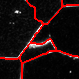

Goal:
Incorporate human interaction into the segmentation task to
- Remove Spurious Segments
- Add Missing Segments
with minimal interaction
Automatic Segmentation
In our previous work, the automatic
segmentation was done by using an energy of the form
\begin{equation} E( S^V ) = \sum_{p\in V}\Theta_p(S^V_i) +
\sum_{\{p,q\}\in\mathcal{P}^V_n} \Phi_{pq}(S_i^V , S_j^V)
\end{equation}
where
- $\Theta$ : controls where each segment can go
- $\Phi$ : controls which segments may be neighbors
Removal
Removal Input
We require only a single annotation (click) identifying a particular segment $S^V_k$ to be removed
 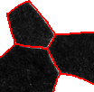
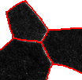
Update Energy Term
Update the $\Theta$ term to allow $S^V_k$ to be
reassigned to its neighbors:
\begin{equation}
\begin{aligned}
\forall p \in S^V_k ,& \quad \Theta_p(\tilde{S}^V_i) = \left\{
\begin{array}{lcr}
0, & S^V_i \in \{\mathcal{A}^V\}_k \\
\infty, & \textrm{ otherwise} \\
\end{array}
\right.\\
\end{aligned}
\end{equation}
Addition
Addition Input
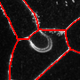 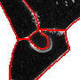
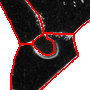
Require three inputs:
- Center point $c$ for new segment
- Seed radius $s$ around the center point which is completely contained within the desired grain
- Dilation radius $d$ around the center point which completely covers the desired grain
Update Energy Terms
\begin{equation} \Theta_p(\tilde{S}^V_{n+1}) = \left\{ \begin{array}{lcr} 0, & \| p - c \| \leq d \\ \infty, & \textrm{ otherwise} \\ \end{array} \right. \end{equation}
\begin{equation} \Theta_p(\tilde{S}^V_i) = \left\{ \begin{array}{lcr} \infty, & \| p - c \| \leq s \textrm{ and } i \neq n+1 \\ \Theta_p(S^{V}_i), & \textrm{ otherwise.} \\ \end{array} \right. \end{equation}
Parameter Estimation Visual Example
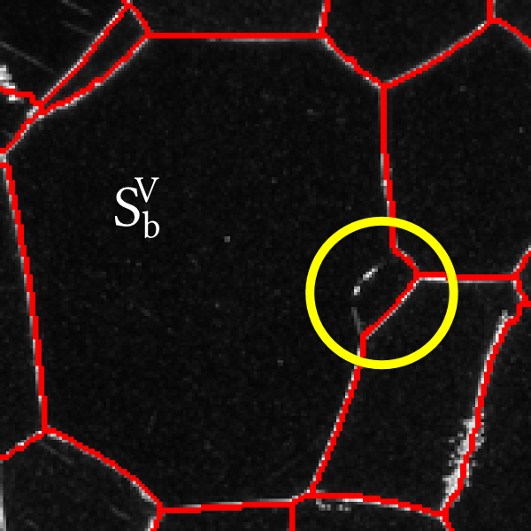 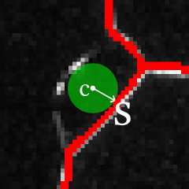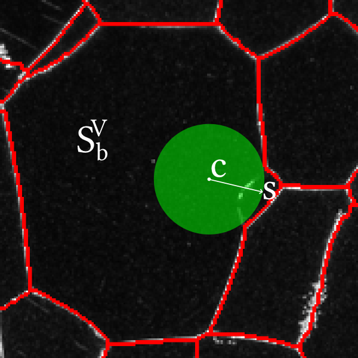 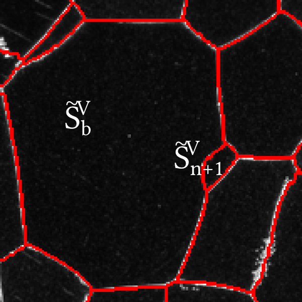
$d = 2\times s$
Experiments
Performance
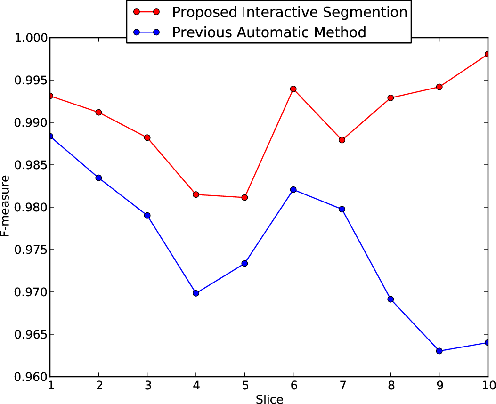Effort
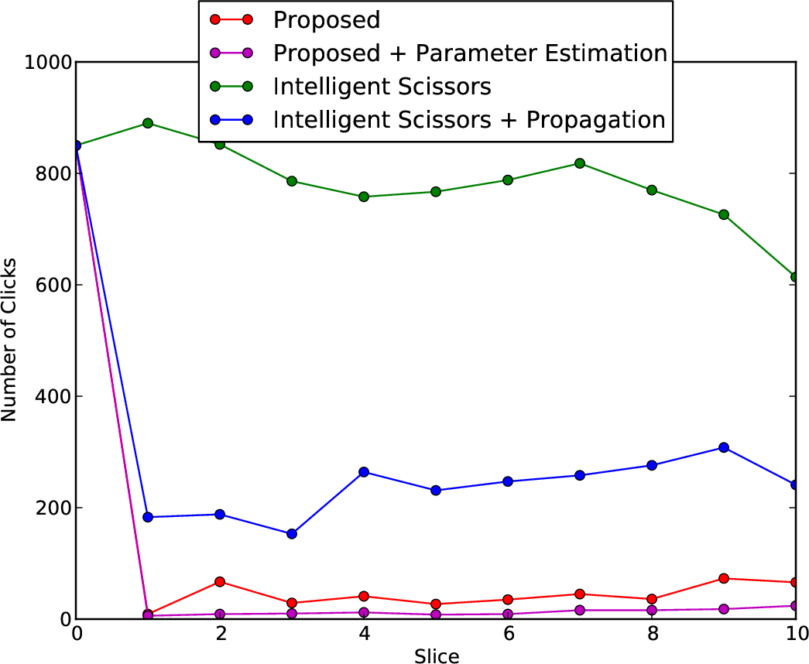Time
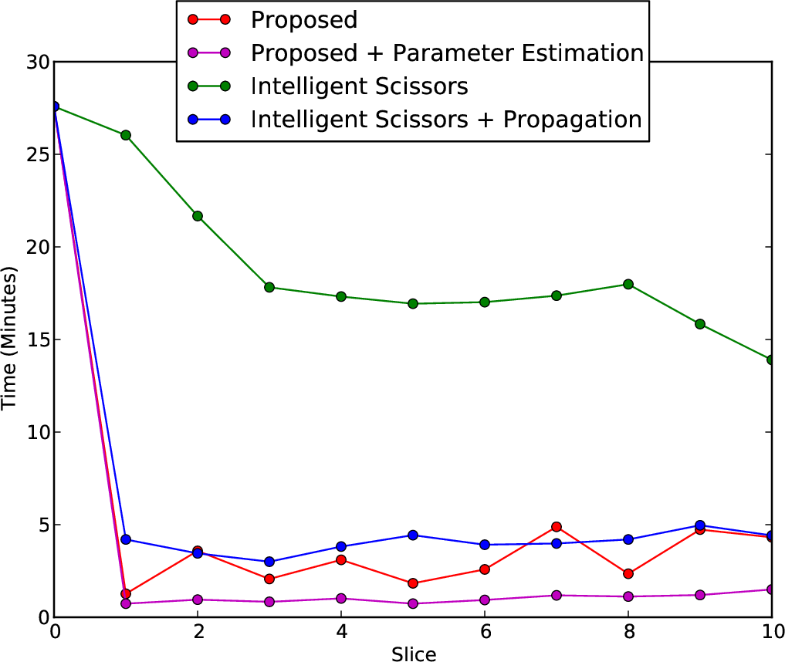Qualitative Results
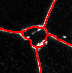 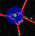 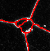 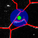
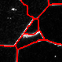
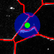
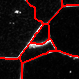
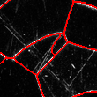 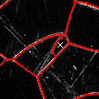
 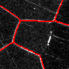
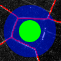
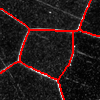
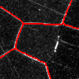
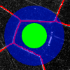
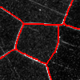
Conclusion
- Augmented our previous propagation approach with an interactive component that increases performance
- Handle both segmentation addition and removal using minimal interaction
- Show that this improves the quality of the segmentation, and is faster than other methods